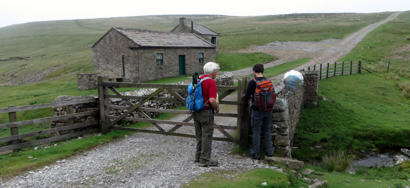
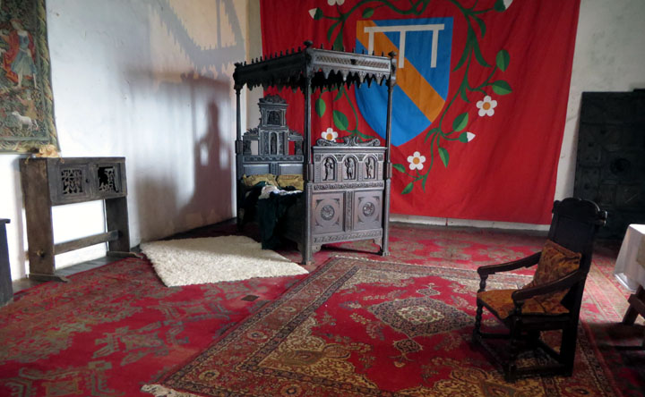

There was a very low cloud covering the hilltops when we left Reeth.
We crossed back over the Swale and were soon in Grinton, where we stopped in to visit the church.
After Grinton, our route led upward, and we entered the cloud. At first there was no discernable path.
When the cloud started to lift we began seeing shafts and spoil heaps from disused lead mines.
At one point we saw a post some way off. We couldn't agree as to whether it was a tall post in the far distance or a short post not far away. Andy was sure of the latter, and to our dismay he said he would go to it and show us. By darn, he got there very quickly and put his hand on it to demonstrate.
We crossed the top of Grinton Moor, and on the other side we were in a grouse hunting area, on a good gravel track for the hunters' vehicles. We passed some very substantial grouse butts.
At the bottom of the hill we were in Apedale, a desolate valley. Through the mist we saw a building, which the map identified as "Dent Houses".
When we reached the bottom, we were surprised to see a mylar balloon bouncing over the grass. It floated down into the stream bed, but Andy rescued it.
We solved the problem of what to do with it by tying it to a gatepost. The two houses you see are "Dent Houses", which are shooters' huts.

We accepted the invitation of "The Estate",
and found the room tidy, as it was supposed to be. We signed the guest book, and ensured that the door was firmly closed when we left, as we had been enjoined to do.
Onward, up and over the next hill, and Bolton Castle came into sight.

It looks like all ruins from this side, but there were in fact lots of intact rooms, one of which was a tea room where we were served a much-appreciated lunch.
After lunch we were just in time for a birds of prey display in the castle garden. The bird being exhibited was actually a buzzard.
We spent a good while in the castle. Rooms ran the gamut, from ordinary, like this:
to this, Mary Queen of Scots's bedroom. She was held in custody here early in her imprisonment years. She had a large suite of rooms, and was allowed 51 attendants!

The views from the top of the tower were magnificent in every direction.
After several enjoyable hours, we left the castle, crossing fields and looking back. The castle was in sight for a long time.
We were now back in Wensleydale. One curiosity about Wensleydale is that it's one of the few Yorkshire dales not named after its river. Wensleydale's river is the Ure, which we crossed just below one of the sections of Aysgarth Falls.
A mile or so after Aysgarth Falls, we began walking beside Bishopdale Beck, a tributary of the Ure. Bishopdale is seven miles long, but before then we came to our pretty village for the night, West Burton. We spent the night at the Fox and Hounds.
Home ** Previous Day ** Next Day